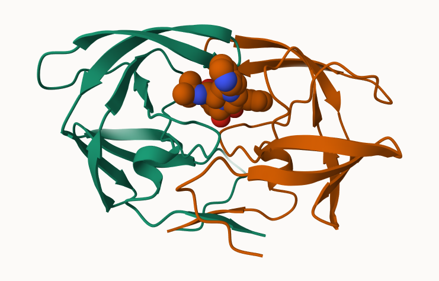

X.ray EM NMR Multiple.methods
182348 18817 14173 230
Neutron Other Total
79 37 215684
round(totals/totals["Total"] *100, 2)
X.ray EM NMR Multiple.methods
84.54 8.72 6.57 0.11
Neutron Other Total
0.04 0.02 100.00
Q2: What fraction of Uniprot does the PDB cover in rough terms?
(215684/249751891*100)
[1] 0.08635931
2. Visualizing Protein Structure
We will learn the basics of Mol* (mol-star) homepage: https://molstar.org/viewer/
We will play with PDB code 1HSG.

Show the ASP 25 amino acids:
HIV-Pr with a bound inhibitor showing the two important Asp 25 amino acids
Back to R and working with PDB structures
Predict the dynamics (flexibility) of an important protein:
library(bio3d)hiv <-read.pdb("1hsg")
Note: Accessing on-line PDB file
hiv
Call: read.pdb(file = "1hsg")
Total Models#: 1
Total Atoms#: 1686, XYZs#: 5058 Chains#: 2 (values: A B)
Protein Atoms#: 1514 (residues/Calpha atoms#: 198)
Nucleic acid Atoms#: 0 (residues/phosphate atoms#: 0)
Non-protein/nucleic Atoms#: 172 (residues: 128)
Non-protein/nucleic resid values: [ HOH (127), MK1 (1) ]
Protein sequence:
PQITLWQRPLVTIKIGGQLKEALLDTGADDTVLEEMSLPGRWKPKMIGGIGGFIKVRQYD
QILIEICGHKAIGTVLVGPTPVNIIGRNLLTQIGCTLNFPQITLWQRPLVTIKIGGQLKE
ALLDTGADDTVLEEMSLPGRWKPKMIGGIGGFIKVRQYDQILIEICGHKAIGTVLVGPTP
VNIIGRNLLTQIGCTLNF
+ attr: atom, xyz, seqres, helix, sheet,
calpha, remark, call
head(hiv$atom)
type eleno elety alt resid chain resno insert x y z o b
1 ATOM 1 N <NA> PRO A 1 <NA> 29.361 39.686 5.862 1 38.10
2 ATOM 2 CA <NA> PRO A 1 <NA> 30.307 38.663 5.319 1 40.62
3 ATOM 3 C <NA> PRO A 1 <NA> 29.760 38.071 4.022 1 42.64
4 ATOM 4 O <NA> PRO A 1 <NA> 28.600 38.302 3.676 1 43.40
5 ATOM 5 CB <NA> PRO A 1 <NA> 30.508 37.541 6.342 1 37.87
6 ATOM 6 CG <NA> PRO A 1 <NA> 29.296 37.591 7.162 1 38.40
segid elesy charge
1 <NA> N <NA>
2 <NA> C <NA>
3 <NA> C <NA>
4 <NA> O <NA>
5 <NA> C <NA>
6 <NA> C <NA>